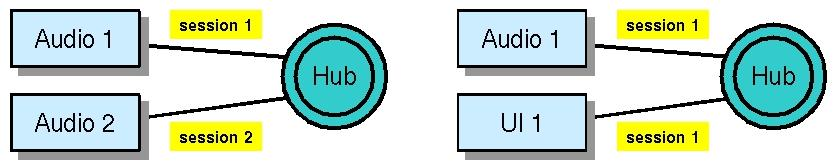

| License / Documentation home / Help and feedback |
Before we look at the final details of putting together an end-to-end system, there's a subject which we've mentioned numerous times but have yet to cover: sorting interactions into sessions. In this lesson, we'll learn what sessions are, how they're created, how they're managed, and what they can do for you.
Sessions distinguish users from each other and group applications associated with the same users together. So a single Hub might support multiple users, each using different dedicated channels (such as audio), and multimodal interactions by each user, using multiple dedicated applications (say, a GUI and audio channel):

First, they provide the boundaries on separate interactions. There's a one-to-one mapping between sessions and Hub log files when logging is enabled in the Hub, and this allows us to sort out statistics about user interactions appropriately for scoring and analysis.
Second, they provide a, well, session-level memory state in the Hub (i.e., the session namespace) for each user interaction which spans all the tokens generated for that user interaction. So if a Hub program needs to record crucial information about the interaction (say, the interaction language, or the media available for output), the session is the appropriate place (and, perhaps, the only appropriate place) to store it. This is especially important if your system anticipates supporting multiple simultaneous users.
Third, and most dramatic, sessions provide a way of controlling the eligibility of service providers in the Hub. Servers can lock themselves to particular sessions (we'll talk about this in a minute) so that they're constrained to send messages to the Hub only for a particular session, or (more important) to receive messages associated only with a particular session. Imagine, for a moment, if this were not the case, and the system had two simultaneous users. If we could not use sessions to distinguish between the various UI elements, and one user provided some input, we wouldn't necessarily be able to guarantee which user received the response! This is because if the response is a new message, rather than a message reply to the original input, the system would try to select an appropriate UI element to handle the output, and it wouldn't be able to tell which UI element was associated with which user. You may respond, "Well, why doesn't it just keep track?", and the answer is: that's what sessions do.
We can see this behavior by using the unit tester. The unit tester allows you to specify the session associated with a new message, and also optionally allows you to lock the session. If we don't set the lock and we have two unit tester servers connected to the same Hub (say, to the toy travel demo), it should be random which server receives the response to any input from either server. And indeed, that's exactly what happens.
[Sessions exercise 1]Select "Process Control --> Restart all". Two unit testers should start up. In each of them, press "Send new message", and then select the first message (the one named UserInput), and then OK. Repeat this process several times. You'll notice that the reply doesn't come back to the unit tester that sent the original message. In each case, the unit tester you interacted with will have the following in its interaction history:
Unix:
% process_monitor $GC_HOME/tutorial/sessions/unit-tester.config
Windows:
C:\> python %PM_DIR%\process_monitor.py %GC_HOME%\tutorial\sessions\unit-tester.config
[Interaction History pane]And one or the other of the interaction history panes will have the response in its interaction history:[Sending: new message]
{c UserInput
:input_string "I WANT TO FLY FROM BOSTON TO LOS ANGELES" }
[Interaction history pane]However, which interaction history gets the response depends on which one started first, and some other factors.[Received: new message]
{c UI.Print
:session_id "Default"
:output_string "American Airlines flight 115 leaves at 11:44 AM, and United flight 436 leaves at 2:05 PM" }
Now, repeat the procedure, but this time type "Session1" in the "Session ID" entry box of the first unit tester, and "Session 2" in the "Session ID" entry box of the second, and press the "Lock session" button before you press OK. It may already say "Default"; delete it if it does (more on this in a minute.) (You'll only have to type "Session1" or "Session2" the first time; more on this in a minute too). As long as you've provided a session ID and locked the session, the response should always come back to the same unit tester.
Select "File --> Quit" to end this exercise.
Locks are a little complicated. You can control which dimensions of the message traffic are locked, and whether the lock is permanent or not. You can find more details about locks in the Hub properties documentation.
This is accomplished as follows. When the Hub sends a message to a server,
it sends the current session ID of the current token along with the message,
which is incorporated into the call environment. Whenever a user writes a
new message through a call environment which has a session ID, the new message
will automatically be associated with that session. In this way, session
IDs automatically percolate from token to token:
The call environment serves this purpose in multiple situations.For instance,
we saw in the brokering
lesson that the broker client is set up with a call environment, just
in case the client has to send a new message to the Hub when it's done.
This happens in the toy travel demo, when the Audio server sends a message
to the recognizer, which receives the audio via a broker client and ultimately
sends a new message from the broker callback containing the recognized
string. This recognition result is part of the same session (user interaction)
as the audio notification, and the call environment ensures that the same
session is used:
So once a session is established, the call environment ensures that it is preserved and propagated appropriately.
It's important to end a session for all sorts of reasons, especially efficiency. There's a lot of memory associated with the session, including the session namespace and all the information related to session locks, and this memory can't be freed until the session ends. It's also important to close the Hub log file, which remains open until the session ends. So it's important to end the session.
You can end a session by invoking the operation Builtin.end_session in the Hub. This dispatch function is implemented by the Builtin server, which we're going to discuss in the next (and final) lesson. If you look at the Audio server, it sends a message to the Hub with this name when it disconnects:
/* ... */Assuming the Hub doesn't have a program named Builtin.end_session, when it receives this message, it will invoke the appropriate Bulitin server operation.
case AUDIO_UNAVAILABLE:
/* The device shut down. End the session and exit. */
/* We ran out of inputs. Disconnect. */
printf("Audio no longer available. Disconnecting.\n");/* First, end the session. */
output_f = Gal_MakeFrame("Builtin.end_session", GAL_CLAUSE);
GalSS_EnvWriteFrame(p->env, output_f, 0);
Gal_FreeFrame(output_f);/* Next, shut down the connection. This ought
to reset the poll. */
GalIO_SetCommDone(GalSS_EnvComm(p->env));
/* ... */
Next: Assembling an end-to-end system
| License / Documentation home / Help and feedback |